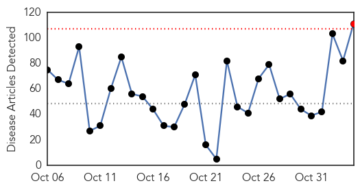
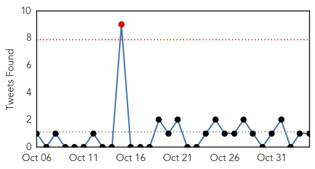
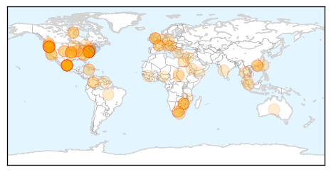
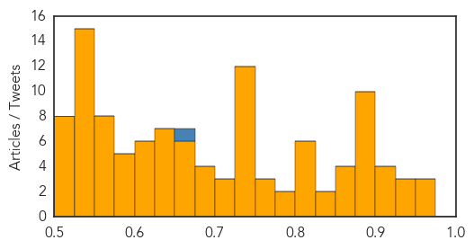

Toggle navigation
Early Warning
Daily Alerts
Unknown
Nov 04, 2015
Compare to:
-
Dengue Fever
Hemmorhagic Fever
Mold/Fungal Infection
Influenza
Meningitis
Pertussis / Whooping Cough
Middle East Respiratory Syndrome
Cholera
Hepatitis
Chikungunya
Yellow Fever
Bubonic Plague
West Nile Virus
Swine Flu
Ebola
Measles
Mumps
30 Day Trends
Web: 1
alerts
, 0
warnings
Twitter: 0
alerts
, 0
warnings
Top Articles:
Showing top 50 articles...
0.968
1,300 Patients at Pennsylvania Hospital may Have Been Exposed to Dangerous Bacteria
0.962
Chipotle's E. coli outbreak continues to grow
0.955
E. Coli Outbreak Forces Chipotle To Close Portland, Seattle Stores
0.938
Oregon Cases of E. Coli Linked to Chipotle Now at 12
0.930
How was the bacteria at York Hospital found?
0.926
Colorado Typhoid Fever Cases Linked To Qdoba Mexican Restaurant — Risk To General Public Is 'Very, Very Low'
0.912
Symptoms of E. coli reported from Deschutes County; Bend Chipotle location remains open
0.912
Symptoms of E. coli reported from Deschutes County; Bend Chipotle location remains open
0.907
Oregon agency probes E. coli cases linked to Chipotle - Story
0.904
Scarlet fever making a comeback…
0.897
It's back: UQ researchers track re-emergence of scarlet fever
0.896
Toxic water scare rocks Cradock as several fall ill
0.895
Flu vaccine is a must to protect children
0.894
Update: 37 People Sickened With E. Coli Linked to Chipotle Restaurants
0.884
Chipotle E. coli O26 Numbers Rise to 37 in Washington and Oregon
0.882
Cryptosporidium Outbreak in Pike County, IL Linked to Apple Cider
0.882
Health Officials Expect More E. Coli Cases Linked to ChipotleNewsInferno
0.879
Flu vaccine shipment delays hit parts of Knox County
0.879
E. Coli Cases Inch Up In Washington . News
0.878
CDC: More food poisoning outbreaks cross state lines
0.873
The STD hiding in plain sight
0.868
Canada: Gonorrhea in Yukon up dramatically
0.866
nmWRAPUP 4-Rivals China, Taiwan to hold surprise meeting weeks before island's elections
0.854
Forum: Vaccines and the freedom of choice
0.849
Investigators closing in on source of Chipotle E. coli outbreak
0.839
More food poisoning outbreaks cross state lines
0.819
Latent TB - the invisible killer
0.815
The Latest on Chipotle E. coli Outbreak in Washington & Oregon - NBC Right Now/KNDO/KNDU Tri-Cities, Yakima, WA
0.809
37 people ill from E. coli outbreak linked to Chipotle, first lawsuit filed — RT USA
0.807
Chipotle closes dozens of locations as more confirmed E.coli cases emerge
0.801
Chipotle Closing More Restaurants?
0.801
Health Minister meets with CARPHA to address regional issues related to NCDs
0.794
More Chipotle E. Coli cases confirmed in Ore., Wash.
0.787
Rare Multistate Outbreaks Cause the Most Foodborne Illness Deaths, CDC Says
0.773
The Portland Press Herald / Maine Sunday Telegram
0.761
Most of the 37 people sickened by E. coli ate Chipotle
0.753
E. Coli Outbreak Forces Chipotle to Shut Seattle, Portland Stores
0.748
Malaria, maternal deaths in South Darfur camp - Sudan
0.746
Chipotle E. coli Case Count Grows to 25 in Washington
0.745
Health officials confirm more Chipotle E. Coli cases in Oregon
0.740
Experts 'amazed' by tapeworm that spread tumors to man
0.737
Health Highlights: Nov. 4, 2015
0.730
US says detected heat flash around Russian jet before crash
0.730
Taiwan and China leaders to hold first meeting since 1949
0.730
First refugees to be relocated from Greece head to Luxembourg
0.730
Hollande’s ‘informal’ visit to nurse was highly choreographed, media say
0.730
France to tackle work hours as part of ‘ambitious’ labour reform
0.730
Experts examine black boxes of crashed Russian jet
0.730
Is China using historic talks to prop up Taiwan's pro-Beijing ruling party?
0.725
Atlantic Windows outbreak after Amherst event likely norovirus
Top Tweets:
0.654
RT: De la crise politique en Haiti : quelle légitimité pour un chef d'Etat choisi par à peine 20% des électeurs?
0.567
WHO and the Malawi Ministry of Health are training community health workers to treat common childhood diseases https://t.co/Q4BxBMFZeC
0.527
By working closely together, clinical medicine & public health can help each other improve health maximally https://t.co/B9OV2jnL7D
Web/News Articles

Tweets

Article Locations

Article Confidences
